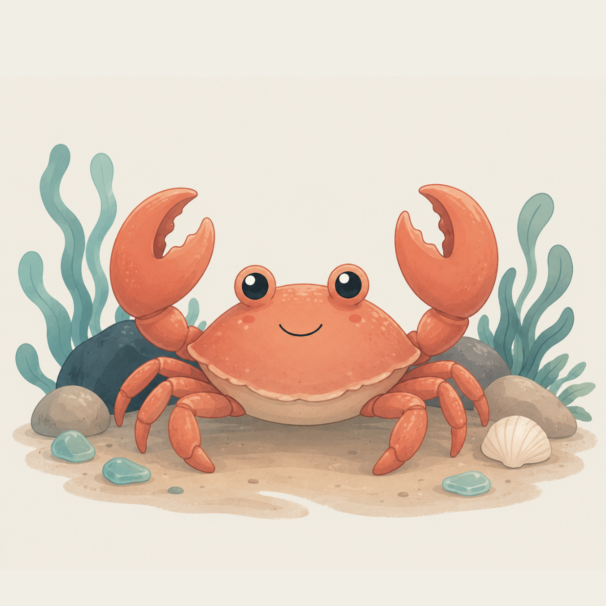

← Home
Shore Journal
A field guide to the little lives you've coaxed out of the pools.
{{ foundCount }} of {{ totalCount }}
found so far.
All
Found
Missing

{{ c.artLabel }}
?
{{ c.name }}
{{ c.rarity }}
{{ c.desc }}
Found {{ c.count }}× · first at {{ c.firstAt }}
128
Boards solved
512
Pools filled
{{ foundCount }} / {{ totalCount }}
Creatures found